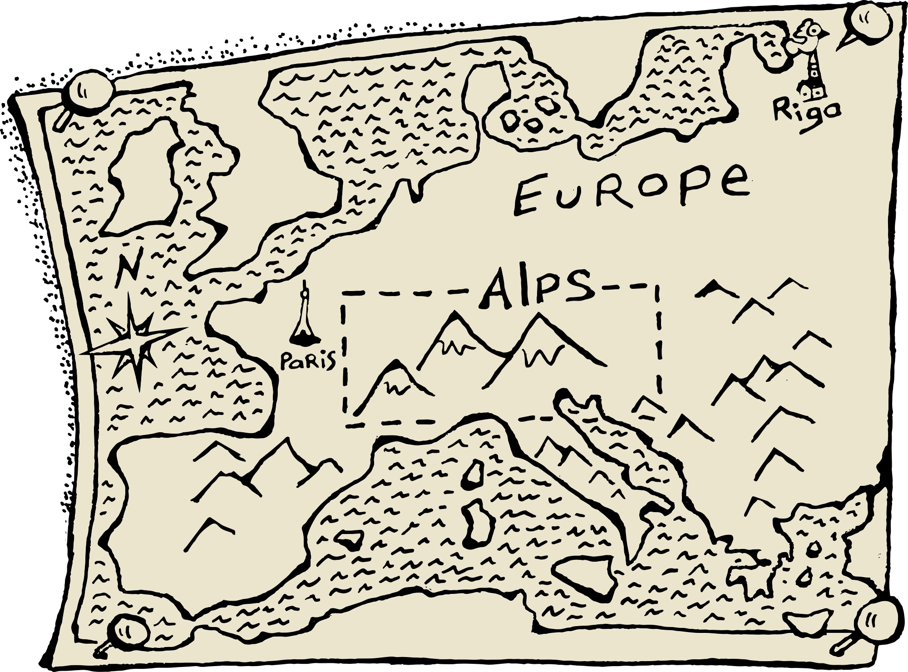

Шел я ночью из Кандавы в Вану. А ночь была такая темная, что если выпустить на дорогу черную кошку и черную крысу — то по черным сугробам крыса всю ночь будет гоняться за кошкой. Потому что в такой темноте они сами запутаются кто из них кто.
Мне стало интересно как они себя поведут, когда посветлеет. Сразу ли поменяются местами или же будут по привычке гоняться друг за другом в прежнем порядке. И так меня это заинтересовало, что я стал крепко смотреть по сторонам, чтобы разглядеть силуэты и не сводить с них глаз до самого рассвета. Ни крысу, ни кошку я не увидел — кто же их выпустит на дорогу в такое время. Зато, когда глаза привыкли к темноте, я разглядел лисицу.
Следом за ней куницу.
Синицу и еще какую-то птицу.
Волчицу и, как это ни странно, тигрицу.
Лечебную траву-медуницу.
Перешел границу, натер ключицу, зашел в больницу.
Увидел там прекрасную девицу.
Потрогал за ягодицу — угодил в темницу.
А когда судья отпустил меня под честное слово, я огляделся и никого больше не увидел. Только лишь снежные поля, силуэты деревьев и редкие огоньки у горизонта. У одного из огоньков, в маленьком домике сидел старый немец.
Следом за ней куницу.
Синицу и еще какую-то птицу.
Волчицу и, как это ни странно, тигрицу.
Лечебную траву-медуницу.
Перешел границу, натер ключицу, зашел в больницу.
Увидел там прекрасную девицу.
Потрогал за ягодицу — угодил в темницу.
Следом за ней куницу.
Синицу и еще какую-то птицу.
Волчицу и, как это ни странно, тигрицу.
Лечебную траву-медуницу.
Перешел границу, натер ключицу, зашел в больницу.
Увидел там прекрасную девицу.
Потрогал за ягодицу — угодил в темницу.
Следом за ней куницу.
Синицу и еще какую-то птицу.
Волчицу и, как это ни странно, тигрицу.
Лечебную траву-медуницу.
Перешел границу, натер ключицу, зашел в больницу.
Увидел там прекрасную девицу.
Потрогал за ягодицу — угодил в темницу.
Следом за ней куницу.
Синицу и еще какую-то птицу.
Волчицу и, как это ни странно, тигрицу.
Лечебную траву-медуницу.
Перешел границу, натер ключицу, зашел в больницу.
Увидел там прекрасную девицу.
Потрогал за ягодицу — угодил в темницу.
Следом за ней куницу.
Синицу и еще какую-то птицу.
Волчицу и, как это ни странно, тигрицу.
Лечебную траву-медуницу.
Перешел границу, натер ключицу, зашел в больницу.
Увидел там прекрасную девицу.
Потрогал за ягодицу — угодил в темницу.
Следом за ней куницу.
Синицу и еще какую-то птицу.
Волчицу и, как это ни странно, тигрицу.
Лечебную траву-медуницу.
Перешел границу, натер ключицу, зашел в больницу.
Увидел там прекрасную девицу.
Потрогал за ягодицу — угодил в темницу.
v2018.8.25
Рис. 0. Когда Рим воевал с Карфагеном, в Испании находилась армия со слонами.
По северу Италии течёт река По. Такая же фамилия у американского писателя и поэта. Эдгар Аллан По придумал схему детектива, ставшую традиционной для жанра:
Opanki
К северу возвышается белая гора Mont Blanc — самая высокая вершина Альп. Князь Вяземский написал о своих впечатлениях в 1855 году:
Когда Рим воевал с Карфагеном, в Испании находилась армия со слонами. Полководец Ганнибал повёл войска через Альпы. Это был тяжёлый путь. Римляне не ожидали, что кто-то сможет пересечь горы. Воины со слонами справились и прогулялись по Италии.
К северу возвышается белая гора Mont Blanc — самая высокая вершина Альп. Князь Вяземский написал о своих впечатлениях в 1855 году:
Когда Рим воевал с Карфагеном, в Испании находилась армия со слонами. Полководец Ганнибал повёл войска через Альпы. Это был тяжёлый путь. Римляне не ожидали, что кто-то сможет пересечь горы. Воины со слонами справились и прогулялись по Италии.

Рис. 1. Когда Рим воевал с Карфагеном, в Испании находилась армия со слонами.
Jlbyjrbq ckjq
Эдгар Аллан По
По северу Италии течёт река По. Такая же фамилия у американского писателя и поэта. Эдгар Аллан По придумал схему детектива, ставшую традиционной для жанра:
совершается преступление;
проходит расследование с осмотром места и улик;
разоблачение преступника.
Ганнибал Барка и слоны
Когда Рим воевал с Карфагеном, в Испании находилась армия со слонами. Полководец Ганнибал повёл войска через Альпы. Это был тяжёлый путь. Римляне не ожидали, что кто-то сможет пересечь горы. Воины со слонами справились и прогулялись по Италии.
Рис. 2. Когда Рим воевал с Карфагеном, в Испании находилась армия со слонами.
Рис. 2. Когда Рим воевал с Карфагеном, в Испании находилась армия со слонами.
Гора Монте-Визо
На пути слонов стоит гора Монте-Визо. Итальянский поэт Данте рассказывал о реке, которая начинается с этой горы:
Как та река, которая свой ход
От Монте-Везо в сторону рассвета
По Апеннинам первая ведет
Дикий кабан с Везула
В тех же местах живёт дикий кабан, о котором рассказывал древнеримский поэт Вергилий:
Вепрь, которого бор на склонах Везула диких
Долгие годы скрывал иль который средь топей Лаврентских
Монблан
К северу возвышается белая гора Mont Blanc — самая высокая вершина Альп. Князь Вяземский написал о своих впечатлениях в 1855 году:
Не видал, хоть из окна,
Живописного Монблана —
Гор царя и великана.
Скрылся он вовнутрь тумана:
У царя приёма нет.
И не знает ваш поэт,
Как, подъемлясь горделиво
На престоле из сребра,
Богом созданное диво,
Блещет Белая Гора.
Сенбернар Барри
Под белой горой живут бело-бежевые сенбернары, которых воспитывали монахи святого Бернара. Собаки учились искать людей попавших под лавину. Бегающие по скалам сенбернары откапывали пострадавших из снега и облизывали лицо, чтобы привести в чувство. Знаменитый сенбернар Барри однажды откопал мальчика и на спине отнёс к людям.
Горы Юра
Неподалёку от больших Альп стоят горы поменьше — Юра. Горы дали название Юрскому периоду в Мезозое. Здесь впервые откопали остатки далёких времён с динозаврами и папоротниками.
Бернские альпы
После Мезозоя наступил Кайнозой, мы живём в этой эре. В позднем Кайнозое, была построена самая высокая железная дорога. Чтобы подняться к вершине скалы Юнгфрау (юная дева в которую влюблён чёрный монах, легенда такая), поезд проезжает сквозь горы Мёнх и Эйгер. Одна остановка специально построена посреди пути, чтобы пассажиры любовались видом.
Чёртов мост
Горная дорога идёт над бурной рекой. Никто не может придумать чертёж крепкого моста, и только чёрт его знает. В награду за помощь, чёрт попросил у людей душу первого, кто перейдёт новый мост. Довольные люди обманули чёрта и пустили через мост козлёнка.
Переход Суворова через Альпы
Через двести лет, за козлёнком пошёл Александр Суворов. Мост охраняли французы, но суворовские солдаты атаковали как черти и прогнали врага с оборонительных позиций.
Пройдя мост, Суворов узнал что ему дали ложное направление. Между озером и скалами нет никакой дороги. Французы сначала смеялись с другого берега озера. Но перестали, когда увидели солдат идущих через скалы. Проведя несколько дерзких переходов и успешных боёв, Суворов спас армию от окружения.
Переход Наполеона через Альпы
Через год, Наполеон Бонапарт взял свою армию и тоже прошёл через горы. Без пушек, без обозов с едой, только крепкие мужики с рюкзаками и ружьями. Как и в предыдущих историях, никто не ожидал появления солдат в неожиданном месте. Противники Наполеона удивились, растроились и покинули Швейцарию.
Сёстры Гаспарин
К концу XX века, солдаты перестали переходить Альпы и воевать друг с другом. Вместо них карабкаются по скалам туристы и альпинисты, а бегают с ружьём — биатлонисты. Три сестры — Селина, Элиза и Айта — швейцарские биатлонистки. Быстро катаются на лыжах и метко стреляют из винтовки. На латышском языке aita это овечка.
Эци — человек из льда
За пять тысяч лет до изобретения ружья, Эци ходил через горы с луком и стрелами. После прогулки Эци замёрз во льду и стал самой старой мумией человека на территории Европы.
Tre Cime di Lavaredo
Речные долины делят Альпы на части. Одна из самых красивых частей — это Доломитовы Альпы из доломита от месье Доломьё. Три вершины Тре-Чиме-ди-Лаваредо видны с далёкого расстояния и много лет служили границей между немцами и итальянцами. Немцы для краткости называют вершины Drei Zinnen, а интересная форма скал помогла альпинизму стать популярным развлечением.
Каринтия и Гросглоккнер
К востоку от Доломитовых Альп расположена красивая страна с красивым названием Каринтия. Лаванталь, Розенталь и Яунталь — это фонетическая амброзия в названиях местных долин. Но самая высокая гора всё равно называется Гросглоккнер.
Под Гросглоккнером извивается одноимённая дорога для автомобильного туризма.
Златорог
На южной стороне Каринтии виднеется гора Триглав с тремя вершинами. Где-то там бегает белая серна Златорог с рогами из чистого золота. У Златорога есть дивный сад на горных вершинах. Только люди не могут найти этот сад из-за своей жадности.
Замок Хохостервиц
Считается самым красивым замком в Австрии. Скала под замком выглядит как огромный камень лежащий в поле. На камне растут башни и крепостные стены.
Ледяная пещера Eisriesenwelt
В горах над Зальцбургом находится огромная ледяная пещера Айсризенвельт. Внутри пещеры круглый год ледяные стены, ледяные столбы и даже ледяные мосты.
Swarovski World of Crystals
А под Инсбруком стоит музей кристаллов Swarovski. Музей охраняет огромная голова с водопадом.